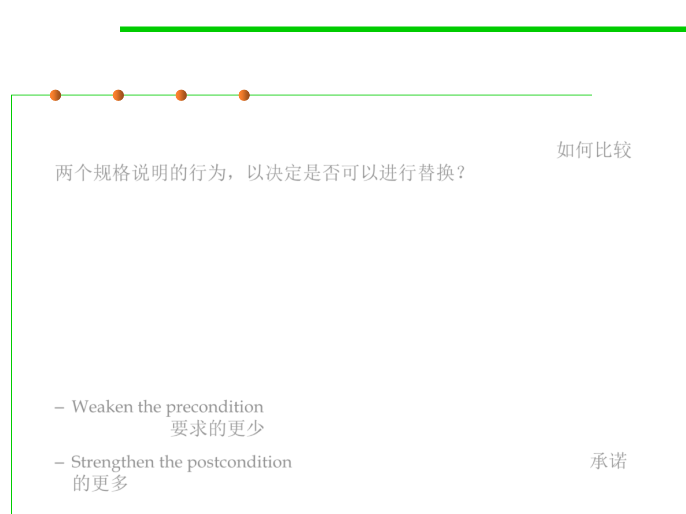

Stronger vs. weaker specs
3.2 Designing Specification
▪ How to compare the behaviors of two specifications to decide
whether it’s safe to replace the old spec with the new spec? 如何比较
两个规格说明的行为，以决定是否可以进行替换？
▪ A specification S2 is stronger than or equal to a specification S1 if
– S2’s precondition is weaker than or equal to S1’s
– S2’s postcondition is stronger than or equal to S1’s, for the states that
satisfy S1’s precondition.
Then an implementation that satisfies S2 can be used to satisfy S1 as
well, and it’s safe to replace S1 with S2 in your program.
▪ Ideas:
– Weaken the precondition: placing fewer demands on a client will never
upset them. 要求的更少
– Strengthen the postcondition, which means making more promises. 承诺
的更多